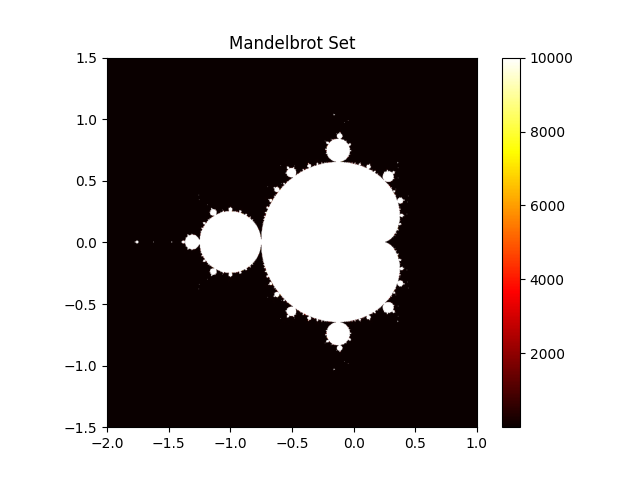

Написание производительного кода NumPy для многоядерных процессоров#
Введение#
NumPy предназначен для высокопроизводительных численных вычислений на Python с помощью векторизованных операций. Однако векторизация не всегда позволяет полностью использовать возможности многоядерных процессоров. Для параллельного выполнения нужны дополнительные подходы.
В этом разделе рассматриваются следующие темы:
Общие концепции для многоядерных процессоров в Python #
Многопроцессная обработка#
Многопроцессность позволяет одновременно выполнять несколько процессов, каждый со своим интерпретатором Python и пространством памяти. В качестве высокоуровневого API Python предоставляет класс concurrent.futures.ProcessPoolExecutor.
Сначала кратко рассмотрим преимущества и недостатки многопроцессного выполнения:
Преимущества#
Обход глобальной блокировки интерпретатора (GIL), позволяющий выполнять вычисления действительно параллельно.
Раздельные адресные пространства предотвращают непреднамеренное совместное использование данных
Недостатки#
Более высокое использование памяти из-за отдельных пространств памяти для каждого процесса
Обмен данными между процессами затруднён и требует сериализации объектов, например с помощью pickle.
Общие советы #
Ниже приведены общие рекомендации по использованию нескольких процессов. Некоторые из них применены в примере многопроцессной обработки.
Уменьшите затраты на создание #
Создание процесса требует более высоких затрат по сравнению с созданием потока из-за необходимости инициализировать новый интерпретатор Python и пространство памяти. Чтобы уменьшить эти накладные расходы, рассмотрите следующие стратегии:
Используйте пулы процессов, чтобы повторно использовать существующие процессы вместо создания новых для каждой задачи. Такую возможность предоставляет
concurrent.futures.ProcessPoolExecutor.Выбирайте подходящие методы запуска. Не выбирайте
forkявно, если не уверены в его безопасности для приложения. Создание копии многопоточного процесса с помощью fork может приводить к взаимоблокировкам или аварийным завершениям. В Python 3.14 метод запуска по умолчанию на POSIX-платформах изменён сforkнаforkserver, чтобы избежать распространённых проблем совместимости многопоточных процессов. Подробнее см. документацию multiprocessing.
Сокращение накладных расходов на обмен данными#
Межпроцессное взаимодействие (IPC) может создавать значительные накладные расходы на сериализацию и передачу данных. В Python между процессами можно передавать только объекты, сериализуемые с помощью pickle. Поэтому многопроцессная обработка не подходит программам, которым приходится часто сериализовать данные для межпроцессного обмена.
Чтобы уменьшить накладные расходы на связь, рассмотрите следующие стратегии:
Минимизируйте объем данных, передаваемых между процессами.
Для больших данных, доступных нескольким процессам, используйте механизмы общей памяти, например
multiprocessing.shared_memory,multiprocessing.Arrayилиmultiprocessing.Value.Распределяйте вычислительную нагрузку равномерно, чтобы эффективно использовать все процессы и избегать простоев.
Особенности сериализации pickle#
При использовании multiprocessing рабочая функция и её аргументы должны поддерживать сериализацию через pickle. Это может ограничивать работу со сложными структурами данных и динамически определяемыми функциями.
Если возникают проблемы с сериализацией с помощью pickle, рассмотрите следующие способы их решения:
Выполните рефакторинг вашего кода, чтобы использовать более простые структуры данных или функции. Например, определите рабочие функции на верхнем уровне модуля и избегайте лямбда-функций или вложенных функций.
Рассмотрите сторонние библиотеки, например joblib. В
joblibстандартный механизм выполненияlokyиспользует cloudpickle для сериализации и поддерживает больше видов объектов Python, чем стандартный модульpickle. Подробнее см. разделjoblibСериализация объектов, не поддерживаемых pickle.
Многопоточность #
Многопоточность позволяет нескольким потокам работать в одном и том же процессе, разделяя одно и то же пространство памяти.
Поддержка Python без GIL появилась как экспериментальная возможность в Python 3.13 и стала официально поддерживаемой, неэкспериментальной возможностью в Python 3.14. В сочетании с библиотеками, специально спроектированными для безопасной работы в потоках, это позволяет выполнять потоки действительно параллельно. Подробнее о таких сборках Python см. руководство по Python без GIL.
В качестве высокоуровневого API Python предоставляет класс concurrent.futures.ThreadPoolExecutor для потокового параллелизма. Python также предоставляет concurrent.futures.InterpreterPoolExecutor, который использует несколько интерпретаторов, работающих в отдельных потоках, и избегает совместного использования объектов Python между ними. Однако он еще не доступен в NumPy. (см. gh-24755 для деталей).
Основные плюсы и минусы многопоточности заключаются в следующем:
Преимущества#
Меньшее потребление памяти, поскольку потоки используют общее адресное пространство
Упрощенная связь между потоками
Недостатки#
Возможны состояния гонки при изменении общих данных одновременно с их чтением в других потоках
Прирост производительности ограничен, если используемые библиотеки Python небезопасны для потоков или слабо поддерживают сборки Python без GIL
Общие советы #
Ниже приведены общие рекомендации по многопоточности. О гарантиях безопасности встроенных типов в сборках Python без GIL см. раздел документации Python Гарантии безопасности потоков. Некоторые рекомендации применены в примере многопоточности.
Избегайте условий гонки #
Гонка данных возникает, когда несколько потоков одновременно изменяют общие данные, что приводит к непредсказуемому результату. Чтобы её избежать, рассмотрите следующие подходы:
Сократите объём общих данных: используйте локальное для каждого потока хранилище либо явно передавайте данные потокам.
По возможности отдавайте предпочтение неизменяемым массивам NumPy или шаблонам доступа только для чтения, поскольку они уменьшают необходимость в явной синхронизации.
Для управления доступом к общим данным используйте потокобезопасные структуры данных или примитивы синхронизации: блокировки, семафоры, условные переменные. Неправильное применение этих механизмов может привести к взаимной блокировке, поэтому используйте их осторожно.
Избегайте запуска избыточного числа потоков на процессоре#
Некоторые операции NumPy, например умножение матриц и функции линейной алгебры (см. Линейная алгебра), могут использовать несколько потоков базовой библиотеки BLAS, например OpenBLAS или MKL.
Если эти операции вызываются из другого пула потоков, уже использующего все доступные ядра CPU, может возникнуть избыток потоков. Внешний пул и потоки BLAS будут конкурировать за одни и те же ресурсы CPU, что способно снизить производительность.
Чтобы избежать запуска большего числа вычислительных потоков, чем может одновременно выполнять CPU, рассмотрите следующие способы:
Ограничьте количество потоков в BLAS до 1, например, используя threadpoolctl
Общие рекомендации для многопроцессной и многопоточной обработки#
Равномерное распределение вычислительной нагрузки#
При неравномерном распределении вычислительной нагрузки часть рабочих процессов или потоков может закончить раньше и простаивать, пока остальные ещё работают. Это снижает эффективность использования ресурсов и увеличивает общее время выполнения.
Для лучшей балансировки нагрузки рассмотрите следующие подходы:
Используйте динамическое распределение задач: назначайте задачи исполнителям по мере их освобождения, вместо того чтобы распределять задачи заранее.
Проверьте параметр
chunksize, чтобы убедиться, что задачи не слишком малы (вызывают чрезмерные накладные расходы) и не слишком велики (приводят к дисбалансу нагрузки).
Определение фактического числа процессоров#
Функции Python os.cpu_count и os.process_cpu_count сообщают соответственно число процессоров системы и число, доступное текущему процессу. Но в некоторых средах, например контейнерах Docker или кластерах HPC, результат может не отражать фактически выделенные процессу вычислительные ресурсы.
Чтобы получить более точный подсчет доступных процессоров, рассмотрите следующие стратегии:
Используйте joblib.cpu_count(): эта функция учитывает привязку к процессорам и квоты планировщика Linux CFS. Подробнее о библиотеке см. в разделе joblib.
Использование нескольких ядер со стандартными библиотеками Python#
В этом разделе показано, как с помощью стандартных библиотек Python использовать многоядерные процессоры при работе с NumPy.
В качестве примера рассмотрим построение множества Мандельброта. Оно определяется как множество комплексных чисел c, для которых последовательность, заданная итерационной функцией, не уходит на бесконечность:
Если после заданного числа итераций модуль \(z_n\) остаётся ограниченным, то есть не превышает порог, обычно 2, точку c предварительно относят к множеству Мандельброта. Примечание переводчика: конечное число итераций даёт приближённую проверку; отсутствие выхода за порог за это время ещё не доказывает принадлежность множеству.
По этому определению каждую точку комплексной плоскости можно проверять независимо, поэтому задача хорошо подходит для параллельных вычислений.
Тёплые цвета на изображении ниже показывают, сколько итераций потребовалось для расходимости последовательности в каждой точке комплексной плоскости.


Подписи на рисунке: Mandelbrot Set — множество Мандельброта.Пример многопроцессной обработки#
Следующий код показывает, как с помощью concurrent.futures.ProcessPoolExecutor распараллелить построение множества Мандельброта между несколькими процессами.
Пример написан прежде всего для ясности. На практике передача больших массивов NumPy между процессами может быть затратной. Эффективнее могут оказаться массивы в общей памяти или создание массивов внутри каждого процесса.
from concurrent.futures import ProcessPoolExecutor
import numpy as np
from numpy.typing import NDArray
def mandelbrot_block(
c_block: NDArray[np.complex128], max_iter: int
) -> NDArray[np.int64]:
z = np.zeros(c_block.shape, dtype=np.complex128)
steps = np.zeros(c_block.shape, dtype=np.int64)
for _ in range(max_iter):
mask = np.abs(z) <= 2
z[mask] = z[mask] * z[mask] + c_block[mask]
steps[mask] += 1
return steps
def mandelbrot_set(
arr: NDArray[np.complex128],
max_iter: int,
n_workers: int,
) -> NDArray[np.int64]:
n_workers = min(n_workers, arr.size)
arrs = np.array_split(arr, n_workers)
with ProcessPoolExecutor(max_workers=n_workers) as pool:
futures = [
pool.submit(mandelbrot_block, _arr, max_iter) for _arr in arrs
]
results = [future.result() for future in futures]
return np.concatenate(results)
if __name__ == '__main__':
xmin, xmax, ymin, ymax = -2.0, 1.0, -1.5, 1.5
nx, ny = 800, 800
max_iter = 10000
n_workers = 10
real = np.linspace(xmin, xmax, nx, dtype=np.float64)
imag = np.linspace(ymin, ymax, ny, dtype=np.float64)
arr = (real[:, np.newaxis] + 1j * imag[np.newaxis, :]).ravel()
mandelbrot_image = mandelbrot_set(arr, max_iter, n_workers)
mandelbrot_image = mandelbrot_image.reshape((nx, ny))
Пример многопоточности #
Как и в примере с несколькими процессами, здесь показано использование concurrent.futures.ThreadPoolExecutor для параллельного построения множества Мандельброта в нескольких потоках. Подробности и дополнительные примеры приведены в разделе Примеры использования Python без глобальной блокировки интерпретатора.
Настройка#
Установка сборки Python без GIL#
Для запуска многопоточного примера нужна сборка Python 3.13 или новее без GIL. Инструкции по её установке см. в разделе Установка Python без GIL.
В документации Python описано несколько способов проверить, является ли ваша сборка Python сборкой без GIL.
Выполните
python -VVв терминале и убедитесь, что в выводе естьfree-threading build.Проверьте результат sys._is_gil_enabled() в оболочке Python: он должен быть False.
Пример кода #
Следующий код показывает, как с помощью concurrent.futures.ThreadPoolExecutor распределить построение множества Мандельброта между несколькими потоками.
В этой реализации несколько массивов используются совместно потоками. Например, SHARED_readonly_arr содержит проверяемые комплексные числа и доступен только для чтения, а SHARED_updating_steps хранит число итераций для каждой точки.
import sys
from concurrent.futures import ThreadPoolExecutor
import numpy as np
def mandelbrot_block(start: int, stop: int, max_iter: int) -> None:
z_target = np.zeros(stop - start, dtype=np.complex128)
indexes = slice(start, stop)
arr_target = SHARED_readonly_arr[indexes]
steps_target = SHARED_updating_steps[indexes]
threshold = 2.0
for _ in range(max_iter):
mask = np.abs(z_target) <= threshold
z_target[mask] = z_target[mask] * z_target[mask] + arr_target[mask]
steps_target[mask] += 1
SHARED_updating_steps[indexes] = steps_target
return None
def mandelbrot_set(
total_size: int,
max_iter: int,
n_workers: int,
) -> None:
chunksize = total_size // n_workers
with ThreadPoolExecutor(max_workers=n_workers) as pool:
futures = [
pool.submit(
mandelbrot_block, start, min(start + chunksize, total_size), max_iter
)
for start in range(0, total_size, chunksize)
]
_ = [future.result() for future in futures]
if __name__ == '__main__':
print("Python version is free-threaded:", not sys._is_gil_enabled())
assert not sys._is_gil_enabled()
xmin, xmax, ymin, ymax = -2.0, 1.0, -1.5, 1.5
nx, ny = 800, 800
max_iter = 10000
n_workers = 10
real = np.linspace(xmin, xmax, nx, dtype=np.float64)
imag = np.linspace(ymin, ymax, ny, dtype=np.float64)
SHARED_readonly_arr = (real[:, np.newaxis] + 1j * imag[np.newaxis, :]).ravel()
SHARED_readonly_arr.flags.writeable = False
SHARED_updating_steps = np.zeros(SHARED_readonly_arr.shape, dtype=np.int64)
mandelbrot_set(SHARED_readonly_arr.size, max_iter, n_workers)
mandelbrot_image = SHARED_updating_steps.reshape((nx, ny))
Сторонние библиотеки для многоядерной обработки#
Во многих практических сценариях сторонние библиотеки могут обеспечить более удобные и эффективные решения, чем использование стандартных библиотек Python.
Dask#
Dask — библиотека с открытым исходным кодом, предоставляющая возможности параллельных вычислений как на одном компьютере, так и в кластере. Она также предоставляет DaskArray с API, похожим на API ndarray из NumPy. Если вы знакомы с NumPy, вам будет легко начать работу с DaskArray.
Документация Dask: https://docs.dask.org/en/stable/
Репозиторий Dask на GitHub: dask/dask.
joblib#
Библиотека joblib предоставляет вспомогательные функции, упрощающие распараллеливание задач.
Например,
Используемый по умолчанию бэкенд
joblib—loky— применяет cloudpickle для сериализации. Он поддерживает больше видов объектов Python, чем стандартный модульpickle, в том числе лямбда-функции.joblib.cpu_count() возвращает число процессоров, доступных текущему процессу, с учётом ограничений вроде привязки к процессорам и квот планировщика Linux CFS. В контейнерах Docker и других средах с ограниченными ресурсами это значение может быть точнее, чем результаты
os.cpu_countи os.process_cpu_count.
Дополнительные сведения о joblib см. в следующих ресурсах:
Документация joblib: https://joblib.readthedocs.io/en/latest/.
Репозиторий joblib на GitHub: joblib/joblib
threadpoolctl#
threadpoolctl предоставляет средства управления пулами потоков в Python, в том числе используемыми BLAS и OpenMP. Это позволяет избежать создания избыточного числа потоков для доступных ядер процессора при совместном использовании нескольких многопоточных библиотек.
Дополнительные сведения о threadpoolctl см. в следующих ресурсах:
Репозиторий threadpoolctl на GitHub: joblib/threadpoolctl